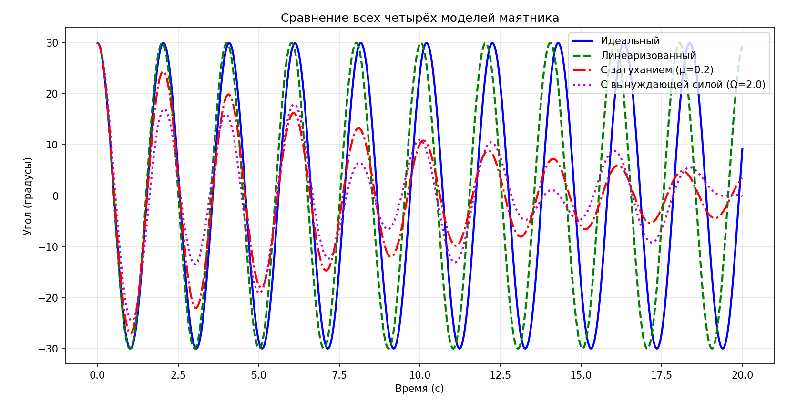
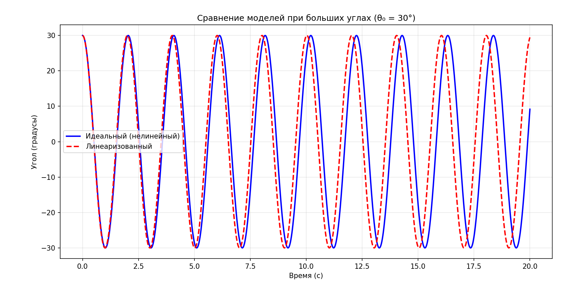
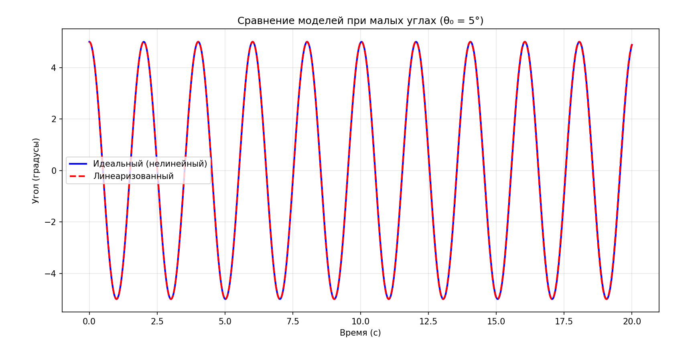

О проекте
Математическое моделирование широко используется в науке и инженерии для изучения поведения физических систем. Маятник — одна из базовых моделей, на примере которой изучают колебательные процессы.
В работе рассматриваются четыре математические модели маятника: идеальная, линеаризованная, с вязким затуханием и с вынуждающей силой. Каждая модель имеет разную точность и область применимости.
Цель работы — разработка программы для визуализации и сравнительного анализа динамики различных моделей математического маятника.
Задачи
- Изучить теоретические основы колебательного движения и маятниковых систем.
- Вывести дифференциальные уравнения для четырёх моделей маятника.
- Разработать модульную структуру приложения.
- Реализовать три режима работы: готовые эксперименты, интерактивный и быстрый старт.
- Создать окно визуализации (анимация, график, фазовый портрет).
- Провести вычислительные эксперименты и проанализировать результаты.
Результаты экспериментов
На рисунках ниже показаны графики сравнения математических моделей маятника, полученные в результате работы программы.

Рисунок 1 — Сравнение всех четырёх моделей маятника (θ₀ = 30°, L = 1 м).

Рисунок 2 — Сравнение идеальной и линеаризованной моделей при больших углах (θ₀ = 30°).

Рисунок 3 — Сравнение идеальной и линеаризованной моделей при малых углах (θ₀ = 5°).
Используемые технологии
| Компонент | Технология |
|---|---|
| Язык программирования | Python 3.14 |
| Среда разработки | Visual Studio 2022 |
| Численные вычисления | NumPy |
| Визуализация | Matplotlib |
| Численный метод | Рунге-Кутты 4-го порядка |
Математические модели
- Идеальная модель — без учёта трения: θ'' + (g/L)·sin θ = 0.
- Линеаризованная модель — приближение малых углов: θ'' + (g/L)·θ = 0.
- Модель с затуханием — учитывает сопротивление: θ'' + μ·θ' + (g/L)·sin θ = 0.
- Модель с вынуждающей силой — внешнее воздействие: θ'' + μ·θ' + (g/L)·sin θ = F₀·cos(Ωt).
Библиографический список
- Кузнецов С.И., Роздеева Э.В. Физика. Часть I. Механика. Механические колебания и волны. Молекулярная физика и термодинамика: учебное пособие. – Томск: Изд-во Томского политехнического университета, 2012. – 234 с.
- Малышев Л.Г., Повзнер А.А. Избранные главы курса физики. Колебания и волны: учебное пособие. – Екатеринбург: Изд-во Уральского университета, 2017. – 200 с.
- Овчаренко И.Н. Математическое и компьютерное моделирование механических колебаний // Инженерный журнал: наука и инновации. 2014. вып. 11. – 8 с.
- Eliseev S.V., Eliseev A.V. Theory of Oscillations, Springer, 2020.
- Borislav Ganev, Marin B. Marinov, Ivan Kralov, Anastas Ivanov. Modeling and Validation of a Spring-Coupled Two-Pendulum System Under Large Free Nonlinear Oscillations, Machines, 2025.
- Dyachenko P., Chychuzhko M., Ali AI-Ammouri. Development and Application of Computer model to Study the models of Dynamic loading in Mechanical oscillatory systems // Eastern-European Journal of Enterprise Technologies. 2017.